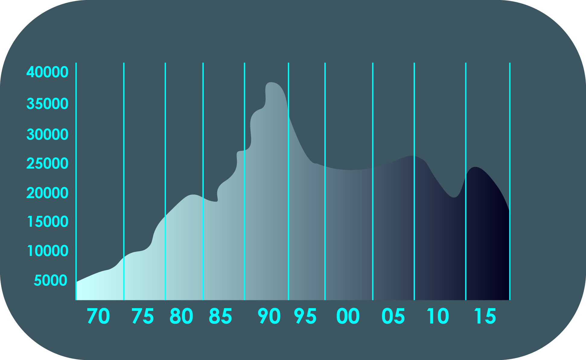

Come investire in borsa ad esempio è una domanda che si fanno in molti, principianti e professionisti, desiderosi di diversificare il collocamento dei loro risparmi per ottenere un margine di guadagno.
Chi decide di operare in borsa investe sulle azioni, guadagnando sul dividendo, ovvero la quota di profitto che generano a fine anno, o sulla loro compravendita.
Il valore delle azioni può scendere o salire a seconda dell’andamento generale del mercato o di quello della società che le ha emesse, quel che è certo è che bisogna seguire con attenzione e costanza il valore, fra possibili rialzi e ribassi imparando come funziona il mercato azionario.
La scelta più consona per chi è alle prime armi e si interroga sul come diventare un operatore di borsa, è quella di aprire un conto su una delle tante piattaforme on line presenti in rete, gestite da realtà regolarmente autorizzate dagli enti preposti.
La scelta di un professionista serio e responsabile al quale affidarsi on line è un elemento al quale prestare la massima attenzione.
Si può iniziare investendo un capitale minimo, anche soli 10 euro, per fare esperienza ed apprendere i rudimenti. Determinante è avere una certa dimestichezza con il computer, disporre di una connessione alla rete web, ma soprattutto saper navigare in internet.
La maggior parte delle informazioni sul come investire in borsa si apprenderanno attraverso la piattaforma scelta, in grado di proporvi una guida al trading on line e tante informazioni aggiornate per conoscere sempre più da vicino il mondo del trading azionario.
Il valore del mercato azionario si misura attraverso tutta una serie di indici di borsa, una sorta di valore medio d’un range di titoli selezionati.
Nel caso in cui si dice che la borsa è salita, in realtà ci si riferisce alla crescita degli indici di borsa, sinonimo del buon andamento dell’economia di un Paese.
Il valore delle azioni non sempre è legato agli indici di borsa, ma risente sopratutto dell’andamento delle realtà societarie di cui è patrimonio.
Fra gli indici di borsa più conosciuti e valutati troviamo il Dow Jones, espressione delle quotazioni della Borsa di New York e il NASDAQ, riservato ai titoli più importanti del settore tecnologico.
Investire in borsa significa anche correre dei rischi, per questo è importante conoscere e sapere utilizzare gli strumenti finanziari derivati più adeguati.
Fra i tanti derivati disponibili la scelta, anche per i principianti, si effettua di regola fra due: i CFD e le opzioni binarie. I primi permettono di operare attraverso un trading più flessibile, le opzioni binarie sono il punto più elevato in termini di semplicità e sono lo strumento più adeguato per chi è alle prime armi.
Esistono piattaforme di trading on line per operare con i CFD oppure con le opzioni binarie. Di norma si tratta di piattaforme gratuite, che non applicano commissioni specifiche ma ottengono guadagno sullo spread, ovvero un margine minimo fra il prezzo a cui è possibile vendere e quello a cui si ha la possibilità di comperare.
La rete propone un ampio numero di piattaforme, che vantano un elevato indice di sicurezza. Scelta la piattaforma che fa al caso vostro non resta che aprire un conto di trading nel quale depositare del denaro da investire.
Non sono rari i casi in cui a chi si iscrive e inizia a fare trading on line viene offerto un bonus di benvenuto per iniziare ad operare.
Aperto il conto e scelto lo strumento finanziario da utilizzare si può iniziare ad operare. Il consiglio è quello di fruire della modalità demo, almeno per i primi tempi, per esercitarsi ed apprendere le tecniche, senza investire denaro.
Una volta iniziato ad operare è importante ricordare che per investire con successo è necessario non smettere mai di apprendere e studiare con impegno.
I futures del FTSE 100 sono scambiabili dalle 7.01 alle 19.59 (GMT), dal lunedì al venerdì.
Il FTSE varia in incrementi di 0,50.
Con la maggior parte dei broker, il requisito di margine per il trading del FTSE è, solitamente, pari al 2% (ovvero una leva di 50:1).
Il volume minimo di transazione è 1 indice.
La valuta del FTSE è la sterlina britannica.
oniamo di volere ACQUISTARE 1 indice del FTSE, il cui prezzo corrente è 6.500, e di avere un account denominato in sterline britanniche. Il margine (fondi) da depositare per aprire questa posizione è di 130,00 GBP. (6.500 GBP (prezzo del FTSE) * 2% (requisito di margine) = 130 GBP)
Tale importo è visibile nella sezione "margine utilizzato" della piattaforma di trading.
Se l'account è denominato in una valuta base diversa, ad esempio l'euro, il margine rimane sempre il 2% ma la piattaforma di trading opererà la conversione automatica delle 130 GBP in euro.
Poniamo che il tasso EUR/GBP sia 0,8400. Nella sezione "margine utilizzato" dell'account in dollari USA verrà quindi visualizzato un importo pari a circa 155 EUR. Ogni variazione del FTSE equivale a 0,50 pence, quindi se il FTSE sale a 6.505,50 GBP, si avrà un utile di 5,50 GBP (o 6,55 EUR al tasso di cambio sopra indicato).
IPoniamo che il tasso EUR/GBP sia 0,8400. Nella sezione "margine utilizzato" dell'account in dollari USA verrà quindi visualizzato un importo pari a circa 155 EUR. Ogni variazione del FTSE equivale a 0,50 pence, quindi se il FTSE sale a 6.505,50 GBP, si avrà un utile di 5,50 GBP (o 6,55 EUR al tasso di cambio sopra indicato).
Il Dow rimane uno degli indici azionari più monitorati e più regolarmente citati, come misura della performance del mercato azionario. Quando i notiziari dichiarano che il mercato è "in rialzo" (o "in ribasso") su base giornaliera, spesso fanno riferimento alla variazione del Dow.
Il Dow misura la performance di 30 grandi società quotate in borsa negli Stati Uniti, provenienti da un ampio ventaglio di settori dell'economia che vanno dai servizi sanitari ai servizi finanziari, passando per molti altri. I 30 titoli azionari del Dow possono determinare le variazioni dell'intero mercato azionario, tale è la forza di questo indicatore dell'economia statunitense e della fiducia degli investitori nelle azioni.
Le 30 società del Dow Jones*
3M
General Electric
Nike
American Express
Goldman Sachs
Pfizer
AT&T
Home Depot
Procter&Gamble
Boeing
Inel
Travelers
Caterpillar
IBM
United Heath Group
Chevron Corp
Johnson&Jhonson
United Technologies Corp
Cisco Systems
JP Morgan Chase
Verzion
Coca-Cola
JMcDonalds
Visa
DuPont
Merck
Wal Mart
Exon Mobil
Microsoft
Walt Disney
*Al 30 settembre 2013
Poiché il Dow è ponderato in base al prezzo, le società con il prezzo per azione più elevato sono quelle che maggiormente influenzano l'indice. Al 30 settembre, sono sette le società con un prezzo per azione superiore ai 100 USD: Boeing, Chevron, Goldman Sachs, IBM, 3M, United Technologies e Visa, che con quasi 200 dollari per azione ha il prezzo più alto.
Ingresso e uscita dal Dow
Sin dalla nascita dell'indice, nel corso degli anni le società hanno fatto il loro ingresso nel Dow o ne sono uscite. Di recente abbiamo assistito all'ingresso di Goldman Sachs, Nike e Visa, il 20 settembre 2013, che hanno sostituito Alcoa, Bank of America e Hewlett-Packard. Vi sono diversi motivi per cui le società vengono incluse o escluse dal Dow.
La motivazione di quest'ultima variazione è stato il desiderio dell'Index Committee (che decide le inclusioni e le esclusioni) di diversificare ulteriormente i settori economici rappresentati dall'indice e il fatto che il prezzo dei tre titoli azionari esclusi era ritenuto troppo basso.
The value of the Dow is not the actual average of the prices of its compIl valore del Dow non è dato dalla media vera e propria dei prezzi dei titoli che lo compongono, ma dalla somma dei prezzi divisa per un particolare divisore. Il divisore varia ogni volta che un titolo dell'indice è soggetto a un frazionamento azionario o a una distribuzione di dividendi, in modo da generare un valore costante per l'indice. Il divisore verrà rettificato anche nel caso in cui una società ne sostituisca un'altra.
Poiché attualmente il divisore è inferiore a 1 ( 0,130216081 al settembre 2013), il valore dell'indice è superiore alla somma dei prezzi che lo compongono, cioè circa 15.000 (23 settembre 2013).
DIJA=Sum of the Stock prices/The DOW Divasor
Alla metà degli anni Novanta del secolo scorso, il valore del Dow registrò un forte incremento di valore grazie ai rapidi progressi compiuti dalla tecnologia dell'epoca. Con il boom dot-com, il Dow crebbe di oltre il 315% nell'arco del decennio e chiuse gli Anni Novanta attorno a quota 11.000 circa.
Agli inizi del nuovo millennio, tuttavia, il valore del Dow subì un duro colpo per effetto dell'esplosione della bolla dot-com e per le ripercussioni politiche e sociali della guerra in Afghanistan, di quella in Iraq e degli attacchi dell'11 settembre. In quel periodo il valore del Dow si aggirava attorno a quota 7.000-9.000.
Verso la metà degli anni Duemila, il Dow risalì di nuovo, grazie a una fase di espansione economica mondiale, robusti utili societari e tassi di inflazione positivi, e il 9 ottobre 2007 raggiunse quota 14.164,53, mettendo a segno un nuovo record.
Ma con il tracollo di Lehman Brothers e la crisi statunitense e globale del credito, tra la fine del 2008 e l'inizio del 2009 il Dow andò a picco, toccando il minimo sui 12 anni il 9marzo 2009 a quota 6.547,05. Verso la fine del 2009, il Dow fu protagonista di un considerevole recupero, grazie anche alla politica monetaria statunitense.
Il 2013 è stato un anno positivo per il Dow, grazie anche a ottimi investimenti azionari. L'aumento di valore è stato attribuito anche alla politica monetaria della Federal Reserve, in particolare la terza fase di allentamento quantitativo o QE3.
WPur rimanendo l'indice statunitense citato più regolarmente, il Dow è stato criticato da più parti per come è composto e come viene calcolato.
Come abbiamo detto in precedenza, il Dow è un indice ponderato in base al prezzo e pertanto attribuisce una maggiore influenza ai titoli con un prezzo per azione più elevato, senza tener conto delle dimensioni relative del settore o della capitalizzazione di mercato di ciascun componente.
Quindi, società come Goldman Sachs e IBM esercitano un'influenza molto maggiore sull'indice rispetto ad altre società altrettanto grandi, come General Electric o Intel, solo perché le loro azioni hanno un prezzo più elevato.
Inoltre una delle critiche regolarmente rivolte al Dow è il fatto che includa appena 30 componenti. Secondo alcuni critici, quindi, non fornisce una rappresentazione accurata della performance generale del mercato, soprattutto quando si considera che negli Stati Uniti le società quotate in borsa sono oltre 15.000.
Alla luce di queste critiche, si comprende come mai l'indice non includa due dei più importanti titoli quotati in borsa, cioè Apple e Google. I titoli azionari di queste due società hanno un prezzo (circa 500 USD per la prima e 900 USD per la seconda, al 23 settembre 2013) che ne impedisce l'inclusione nell'indice, poiché qualunque variazione avrebbe eccessive ripercussioni sul suo valore complessivo.
Poniamo di volere ACQUISTARE 1 indice del DJ30, il cui prezzo corrente è 15.100, e di avere un account denominato in dollari USA.
Il margine (fondi) da depositare per aprire questa posizione è di 75,50 USD.
(15.100 USD (prezzo del DJ30) * 0,5% (requisito di margine) = 75,50 USD)
Tale importo è visibile nella sezione "margine utilizzato" della piattaforma di trading.
I futures del DJ30 sono scambiabili dalle 22.01 alle 20.14 (GMT), dal lunedì al venerdì.
Con la maggior parte dei broker, il requisito di margine per il trading del DJ30 è, solitamente, pari allo 0,5% (ovvero una leva di 200:1).
Il volume minimo di transazione è 1 indice.
Il DJ30 varia in incrementi di 1,00.
Se l'account è denominato in una valuta base diversa, ad esempio l'euro, il margine rimane sempre lo 0,5% ma la piattaforma di trading opererà la conversione automatica dei 75,50 USD in euro.Poniamo che il tasso EUR/USD sia 1,3500. Nella sezione "margine utilizzato" dell'account in euro verrà quindi visualizzato un importo pari a circa 55,90 EUR.Ogni variazione del DJ30 equivale a 1,00 USD, quindi nel nostro esempio, se si acquista 1 indice e il DJ30 passa da 15.1000 a 15.200, si avrà un utile di 100 USD (o 74,07 EUR al tasso di cambio sopra indicato).
Il CAC 40 (CAC quarante) è un indice azionario francese. È un indice ponderato in base alla capitalizzazione che misura la performance delle 40 principali società quotate a Euronext Paris, il mercato azionario francese.
Il CAC è uno dei principali indici nazionali del gruppo borsistico Euronext, in aggiunta al BEL20 di Briuxelles, al PSI-20 di Lisbona e all'AEX di Amsterdam.
Poiché la Francia è una delle principali economie europee, il CAC rappresenta un importante indicatore della performance e dello stato di salute economica dell'economia europea nel suo complesso.
Sanofi(12.19%)
GDF SUez (2.84%)
Arcelor Mital (1.69%)
Alstrom(0.96%)
Total (11.96%)
Vivendi (2.77%)
PPR (1.64%)
Solway (0.94%)
BNP Paribas (6.24%)
Pernod Ricard (2.52%)
Carrefour (1.54%)
Gemalto (0.76%)
LVMH (5.02%)
Vinci (2.42%)
Lafarge (1.25%)
Capgemini (0.70%)
Air Liquide (4.08%)
Unibail-Rodamco (2.31%)
Publicis (1.19%)
Accor (0.65%)
Groupe Danone (4.07%)
Orange (2.27%)
Technip (1.18%)
Bouygues (0.60%)
Schneider Electric (4.04%)
Essilor (2.05%)
Legrand (1.14%)
Vallourec (0.58%)
L’Oreal (3.65%)
EADS (1.89%)
Renault (1.10%)
EDF (0.57%)
AXA (3.40%)
Michelin (1.85%)
Safran (1.08%)
STMicroelectronics (0.54%)
Société Générale (3.04%)
Saint-Gobain (1.78%)
Crédit Agricole (1.02%)
Veolia Environnement (0.44%)
Molte società del CAC sono società con un elevato livello di globalizzazione come L'Oreal, Michelin, BNP Paribas e AXA, e gestiscono attività economiche di dimensioni rilevanti sui mercati esteri. Di fatto, oltre due terzi delle attività economiche delle società del CAC si svolgono all'estero e più di due terzi dei loro dipendenti si trovano fuori della Francia. *Ponderazioni al gennaio 2013
Questo aspetto della globalizzazione è rilevabile anche nel loro azionariato. Il 45% delle azioni quotate sono detenute da investitori tedeschi, statunitensi, britannici e giapponesi, per citare le nazionalità più rilevanti. Le dimensioni di questo indice superano quelle di qualunque altro indice azionario europeo.
La ponderazione delle società del CAC è limitata al 15%. Attualmente Sanofi, una società farmaceutica, presenta la ponderazione più alta, di poco superiore al 12%.
Ogni trimestre, il CAC 40 viene esaminato dal Conseil Scientifique, il comitato direttivo indipendente dell'indice. In occasione di questi esami, le società quotate a Euronext Paris vengono classificate in ordine decrescente per capitalizzazione di mercato.
Si tratta di un metodo basato sul flottante, quindi sono incluse solo le azioni liberamente circolanti. Tra le prime cento società di questa classifica, ne vengono scelte quaranta da includere nel CAC, in modo da creare un benchmark indicativo delle azioni francesi e della gestione di portafoglio.
Dal dicembre 2011 il CAC si mantiene invariato.
Il valore base del CAC venne fissato a 1.000 il 31 dicembre 1987. Questo valore base di 1-000 era l'equivalente di una capitalizzazione di mercato totale di 370.437.433.957,70
Franchi francesi. Il CAC registrò il massimo storico nel settembre del 2000, all'apice della bolla dot-com, quando toccò i 6.922 punti.
Nel marzo 2009, in seguito alla crisi del credito, come accadde alla maggior parte degli indici anche il CAC subì un tracollo, toccando il minimo su sei anni (2.500). Da allora, il CAC è rimbalzato e attualmente viaggia attorno a quota 4.200.

I futures del CAC sono scambiabili dalle 6.01 alle 19.59 (GMT), dal lunedì al venerdì.
Il CAC varia in incrementi di 0,50.
Con la maggior parte dei broker, il requisito di margine per il trading del CAC è, solitamente, pari al 2% (ovvero una leva di 50:1).
Il volume minimo di transazione è 1 indice.
La valuta del CAC è l'euro.
Poniamo di volere ACQUISTARE 1 indice del CAC, il cui prezzo corrente è 4.200, e di avere un account denominato in euro. :
Il margine (fondi) da depositare per aprire questa posizione è di 84 EUR. .
(4.200 EUR (prezzo del CAC) * 2% (requisito di margine) = 84 EUR)
Tale importo è visibile nella sezione "margine utilizzato" della piattaforma di trading.
Se l'account è denominato in una valuta base diversa, ad esempio il dollaro USA, il margine rimane sempre il 2% ma la piattaforma di trading opererà la conversione automatica degli 84 EUR in dollari USA.
Poniamo che il tasso EUR/USD sia 1,3500. Nella sezione "margine utilizzato" dell'account in dollari USA verrà quindi visualizzato un importo pari a circa 113 USD.
Ogni variazione del CAC equivale a 0,50 centesimi (di euro), quindi nel nostro esempio, se si acquista 1 indice e il CAC passa da 4.200,00 a 4.235,00, si avrà un utile di 35,00 EUR (o 47,25 USD al tasso di cambio EUR/USD).
TL'indice azionario DAX 30 Stock (per esteso, il Deutscher Aktien IndeX, che in tedesco significa "Indice azionario tedesco") include i titoli di 30 importanti blue-chip tedesche scambiati alla borsa di Francoforte.
Come il FTSE 100 e l'S&P500, anche il DAX 30 è un un indice ponderato in base alla capitalizzazione e misura, sostanzialmente, la performance delle 30 principali società quotate in borsa in Germania. Rappresenta quindi un importante indicatore della forza dell'economia tedesca e della fiducia degli investitori nei confronti delle azioni tedesche.
Società incluse nell'indice azionario DAX 30
In DAX è rimasto un indice relativamente stabile, mantenendo 16 delle 30 società originali incluse al momento della sua creazione, nel 1988.
Bayer (9.99%)
Munich Re (3.41%)
Deutsche (1.39%)
BASF (9.81%)
Volkswagen Group (3.27%)
Merck (1.16%)
Siemens (9.09%)
BMW (3.17%)
Lufthansa (1.06%)
SAP (7.57%)
Deutsche Post (2.61%)
Heidelberg Cement (1.05%)
Allianz (7.36%)
Adidas (2.48%)
Infineon Technologies (0.98%)
Daimler (6.65%)
RWE (1.9%)
Beiersdorf (0.97%)
Deutsche Bank (4.67%)
Henkel (1.89%)
ThyssenKrupp (0.82%)
Deutsche Telekom (4.02%)
Fresenius (1.85%)
K + S (0.76%)
Linde (3.91%)
Fresenius Medical Care (1.69%)
Commerzbank (0.63%)
E.ON (3.80%)
Continental (1.46%)
Lanxess (0.60%)
*Al 30 settembre 2013
La ponderazione delle società è limitata al 10%, per soddisfare i requisiti legali dell'indice e, soprattutto, per evitare che eventuali fusioni e acquisizioni determinino la nascita di un "peso massimo" in grado di influenzare pesantemente l'indice. Le prime cinque società del DAX (Bayer, BASF, Siemens, SAP e Allianz) costituiscono oltre il 43% dell'indice. Quando si investe nel DAX, quindi, è indispensabile informarsi sulla performance di queste società e dei rispettivi settori economici (rispettivamente farmaceutico, chimico, elettronico, IT e assicurativo).
Per essere inclusa nel DAX 30, una società deve essere quotata al Prime Standard, un segmento della borsa di Francoforte, e almeno il 10% delle sue azioni devono essere liberamente circolanti. Vi sono anche diversi altri criteri da soddisfare.
Una società viene esclusa dal DAX se scende in 45ª posizione (o posizione inferiore), per capitalizzazione di mercato, e viene inclusa se sale in 25ª posizione (o posizione superiore).
Il Consiglio di Amministrazione di Deutsche Börse, la borsa tedesca, si riunisce ogni trimestre per stabilire l'inclusione e l'esclusione di società dal DAX.
I futures del DAX sono scambiabili dalle 6.01 alle 19.59 (GMT), dal lunedì al venerdì.
Il DAX varia in incrementi di 0,50.
Con la maggior parte dei broker, il requisito di margine per il trading del DAX è, solitamente, pari al 2% (ovvero una leva di 50:1).
Il volume minimo di transazione è 1 indice.
La valuta del DAX è l'euro.
Poniamo di volere ACQUISTARE 1 indice del DAX , il cui prezzo corrente è 8.600, e di avere un account denominato in euro.
Il margine (fondi) da depositare per aprire questa posizione è di 172 EUR.
(8.600 EUR (prezzo del DAX) * 2% (requisito di margine) = 172 EUR)
Tale importo è visibile nella sezione "margine utilizzato" della piattaforma di trading.
Se l'account è denominato in una valuta base diversa, ad esempio il dollaro USA, il margine rimane sempre il 2% ma la piattaforma di trading opererà la conversione automatica dei 172 EUR in dollari USA.
Poniamo che il tasso EUR/USD sia 1,3500. Nella sezione "margine utilizzato" dell'account in dollari USA verrà quindi visualizzato un importo pari a circa 232 USD.
Ogni variazione del DAX equivale a 0,50 centesimi (di euro), quindi nel nostro esempio, se si acquista 1 indice e il DAX passa da 8.600,00 EUR a 8.635,00 EUR, si avrà un utile di 35,00 EUR (o 47,25 USD al tasso di cambio EUR/USD di 1,3500).
Il Nikkei 225 è l'indice azionario della borsa di Tokyo (Tokyo Stock Exchange o TSE). Viene calcolato dal quotidiano Nihon Keizai Shimbun (Nikkei). Il Nikkei venne calcolato per la prima volta nel 1950 e rappresenta la più citata media di titoli azionari giapponesi. .
È simile al Dow Jones statunitense, in quanto si tratta di un indice ponderato in base al prezzo. Nel calcolo del valore dell'indice, quindi, viene attribuita una maggiore ponderazione alle società con un prezzo per azione più alto. Di fatto, dal 1975 al 1985 il nome dell'indice è stato Nikkei Dow Jones Stock Average. .
Il Nikkei misura la performance di 225 grandi società quotate in borsa in Giappone, provenienti da un ampio ventaglio di settori dell'economia. Questo indice traccia quindi un quadro dell'economia giapponese e della fiducia degli investitori nei confronti delle azioni giapponesi. .
BeDi seguito è riportato un elenco delle quindici principali società del Nikkei in termini di prezzo per azione*.
Fast Retailing
Nitto Denko
Tokyo Electron
FANUC
Toyota Motor
Daikin Industries
Central Japan Railway
Secom
Kyocera
East Japan Railway
Shin-Etsu Chemical
Nippon Telegraph & Telephone
Softbank
MEIJI Holdings
KDDI
*Al 30 settembre 2013
Fast Retailing è la principale società inclusa nel Nikkei, con un prezzo per azione di 36.850 yen, quasi doppio rispetto a quello di FANUC, al 30 settembre 2013. Fast Retailing è una holding del settore delle vendite al dettaglio e controlla il marchio di abbigliamento Uniqlo, in aggiunta a diversi altri famosi marchi giapponesi. La sua ponderazione nel Nikkei è superiore al 9%.
Il Nikkei è fortemente influenzato dalle società del settore tecnologico che include le società farmaceutiche e delle comunicazioni. Ecco perché nel trading del Nikkei è importante comprendere la performance di questi settori dell'economia.

L'inclusione delle diverse società nel Nikkei viene riesaminata ogni anno, in autunno. Se la commissione di selezione delibera una variazione, questa avviene ai primi di ottobre. Un cambiamento, tuttavia, può avvenire in qualunque momento se una società cessa di essere quotata alla borsa di Tokyo (TSE). Tale operazione è nota come "sostituzione straordinaria" e, di norma, è la conseguenza di un fallimento o di una fusione.
Nell'ottobre 2013 verranno apportate le prime modifiche al Nikkei da due anni a questa parte. Nitto Denko e Tokyu Fudosan Holdings sostituiranno, rispettivamente, Tokyu Land Corporation e Mitsubishi Paper Mills. Questo perché Tokyu Land Corporation cesserà di essere quotata al TSE e costituirà una nuova holding. Mitsubishi Paper Mills viene rimossa a causa di una flessione della liquidità.
Il Nikkei si prefigge di fornire un quadro accurato dell'economia giapponese e del mercato azionario del paese. Per essere inclusa nel Nikkei, una società deve essere giapponese, essere quotata alla borsa di Tokyo ed emettere azioni ordinarie. Il peso del settore economico (tra i sei illustrati nel grafico a torta sopra riportato) e il volume/la liquidità di transazione sono due criteri che vengono valutati nella scelta delle società da includere.
JCome il Dow Jones 30, anche il Nikkei viene calcolato utilizzando il prezzo di ciascuna azione, piuttosto che la capitalizzazione di mercato totale di una società. Tuttavia, i prezzi per azione vengono tutti rettificati mediante un "valore nominale presunto", di modo che il livello di prezzo delle azioni scambiate attraverso lotti da 1 azione sia diverso rispetto a quello dei lotti da 100 o 1000 azioni.
La formula per calcolare il valore del Nikkei è quindi:
NIKKEY 225=Sum of the Adjusted Stick prices/ the NIKKEY Divasor
Il divisore viene modificato in base a eventuali azioni intraprese dalle società, ad esempio frazionamenti azionari o fusioni, e dall'ingresso di nuove società. Al 1º ottobre 2013, il divisore è fissato a 25,414, in aumento rispetto al precedente 24,975 per via delle due aggiunte sopra menzionate e di un frazionamento azionario 1,1-1 operato dal Nisshin Seifun Group.
Storicamente, il Nikkei è andato controcorrente rispetto ad altri indici azionari nazionali. Il modello classico delle medie azionarie mostra una crescita costante negli anni, con nette flessioni nei periodi di recessione e instabilità politica.
Gli indici europei e statunitensi hanno registrato i massimi storici nel 2013 (o vi si sono avvicinati). Il Nikkei non ha seguito questo schema. Il Nikkei registrò il massimo storico il 29 dicembre 1989, al culmine della bolla del prezzo degli attivi giapponesi, chiudendo a quota 38.915,87, dopo essere cresciuto di sei volte nell'arco degli Anni Ottanta. Da quella data, iniziò a declinare, perdendo tutto il terreno guadagnato. Il 10 marzo 2009, il Nikkei chiuse a quota 7.054,98, con una perdita dell'82% rispetto a quel picco.
Il 15 marzo 2011, il Nikkei perse di colpo oltre il 10%, scendendo a 9.605,15 punti. La causa scatenante fu il disastroso terremoto che aveva colpito il Nord-Est del Giappone. L'indice ha continuato a perdere terreno per tutto il 2011, toccando il minimo di 8.160,01 il 25 novembre di quell'anno, il valore di chiusura più basso dal 10 marzo 2009. Nel 2011 il Nikkei perse oltre il 17%, chiudendo l'anno a quota 8.455,35, il minimo su quasi trent'anni, dopo gli 8.016,70 punti registrati in chiusura del 1982.
Il 2013 è stato un anno di guadagni straordinari per il Nikkei, grazie soprattutto all'energico cambio di rotta giapponese in materia di politiche monetarie e fiscali. Il nuovo primo ministro Shinzo Abe ha impresso un'accelerazione alla spesa pubblica e la banca centrale giapponese ha immesso massicci quantitativi di moneta nell'economia. Abe conta di rendere il mercato del lavoro giapponese più flessibile e di invogliare le donne a entrare a far parte della forza lavoro.
I futures del Nikkei sono scambiabili dalle 23.46 alle 06.24 e dalle 7.31 alle 17.54 (GMT), dal lunedì al venerdì.
Il Nikkei varia in incrementi di 5,00.
Con la maggior parte dei broker, il requisito di margine per il trading del Nikkei è, solitamente, pari al 2% (ovvero una leva di 50:1).
Il volume minimo di transazione è 100 indici.
La valuta del Nikkei è lo yen giapponese.
Poniamo di volere ACQUISTARE 100 indici del Nikkei , il cui prezzo corrente è 14.100, e di avere un account denominato in dollari USA.
Il margine (fondi) da depositare per aprire questa posizione è di 282 JPY.
(14.100 JPY (prezzo del Nikkei) * 2% (requisito di margine) = 282 JPY).
Poiché l'account è denominato in dollari USA, l'importo viene convertito automaticamente al tasso di cambio USD/JPY corrente. Poniamo che il tasso corrente sia 99,00.
Nella sezione "margine utilizzato" della piattaforma verrà quindi visualizzato un importo pari a 2,85 USD.
Se l'account è denominato in una valuta base diversa, ad esempio l'euro, il margine rimane sempre il 2% ma la piattaforma di trading opererà la conversione automatica dei 282 JPY/2,85 USD in euro.
Ogni variazione del Nikkei equivale a 5,00 JPY, cioè circa 5 centesimi (di dollaro USA), quindi nel nostro esempio, se si acquistano 100 indici e il Nikkei passa da 14.100 a 14.400, si avrà un utile di 15 USD.